|
King-size verslag Willem II - Roda JC
|
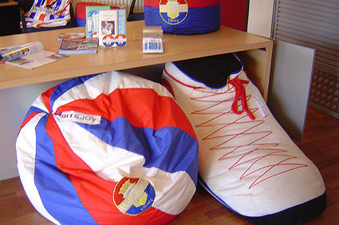
Willem II is in luttele jaren tijd afgezakt van de Championsleague naar
de
nacompetitie. Leefde men dan toch op te grote voet?
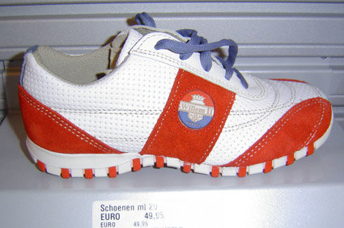
Dit maatje komt al dichter bij de realiteit. Opvallend trouwens dat elke
willekeurige fanshop in Nederland een interessanter assortiment in huis
heeft dan de onze. 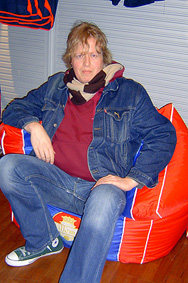
Zoals bijvoorbeeld deze zitzak.
De onderste dus. 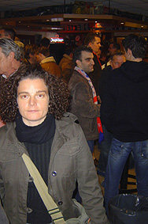
In het supportershome hing een
gezapige sfeer. 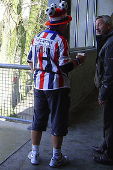
In de omloop oogde het al wat
feestelijker. 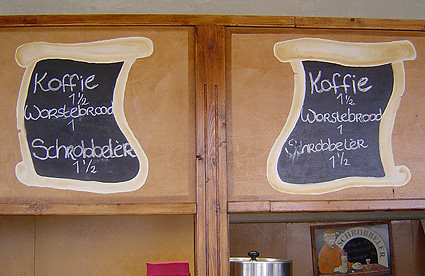
Kwam dat wellicht door de Schrobbelèr?
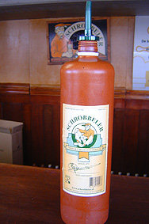
Waarschijnlijk wel! 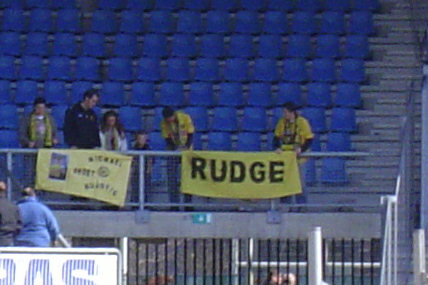
Humphrey Rudge heeft tegenwoordig een eigen fanclub.
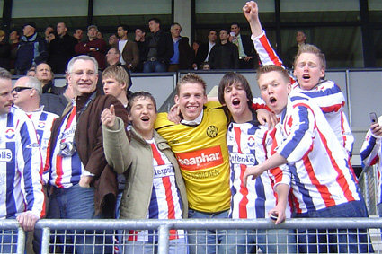
Oeps, verkeerde vak. 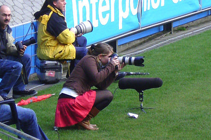
Willem II mag dan wel in de kelder van de Eredivisie wegkwijnen, ze
hebben wél de mooiste fotografen.
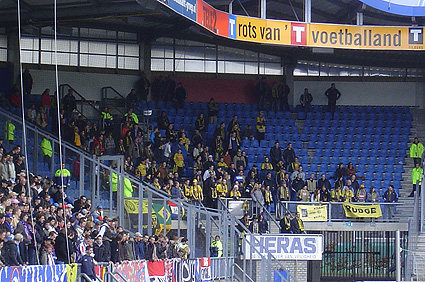
Zonder het Fanproject is het in het uitvak maar een saaie bedoening.
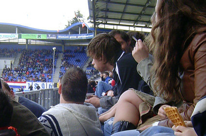
Al na een half uur krijgt het legertje geschorste en geblesseerde RJC-
ers op de tribune gezelschap van Gregoor van Dijk.
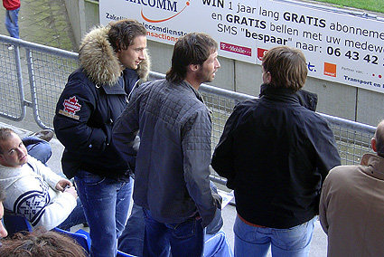
Boldiszar, Gerrie en Andres bespreken in de rust de tactiek voor de
tweede helft. 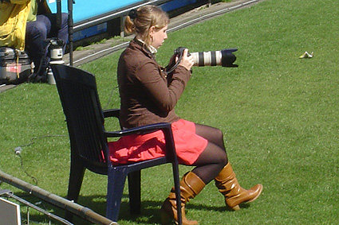
Dat zit net iets gemakkelijker.
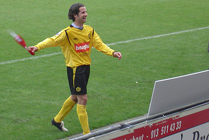
Cziommer is erg blij met zijn eerste Roda JC aanvoerdersband.
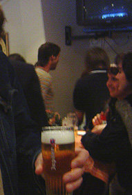
In het spelershome schonk men
net als in de rest van het stadion
Jupiler. En zo reden we uiteindelijk
toch nog jaloers huiswaarts.
Foto's: Marco & Danniëlle Het wedstrijdverslag:
Roda startte erg slap en liep verdiend tegen de 1-0 aan. Achterin was het niet
veel soeps. Na de 1-1, die uit het niets viel, sloeg de vlam in de pan na een
ferme overtreding van v Dijk waarna ook Voigt en een handtastelijke tuup van
Willem II eigenlijk rood hadden moeten zien. De tien resterende RJC-ers werden
volledig onder de voet gelopen en de 2-1 ruststand deed vrezen voor een
afslachting. In de tweede helft knokte Roda zich moedig terug in de wedstrijd en
heel even leek het er nog op dat we misschien met drie punten huiswaarts konden
keren. Na een loeihard schot van Willem II op de paal (uiteraard in de
blessuretijd) stonden we weer met beide voeten op de grond en waren we alsnog
blij met de puntendeling. Minder blij zijn we met de personele bezetting. De
ziekenboeg is dermate vol dat een onfitte (en stevig ingetapete) Vicelich
noodgedwongen de geblesseerde Saeijs moest vervangen omdat er geen verdedigers
meer op de bank zaten. Senden heeft de hele week niet getraind en is wellicht
nog niet fit voor komende woensdag terwijl v Dijk dus waarschijnlijk geschorst
zal zijn. Lichtpuntje: de comeback van Humphrey Rudge, die zowel in het eerste
als het tweede het net geregeld weet te vinden. Zo ook in Tilburg. Vreemd dat
hij nog geen contractverlenging op zak heeft.
Wedstrijdverslag: Marco (thanx)
© Koempels Pleasure Dome
|